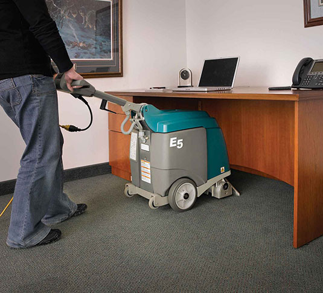
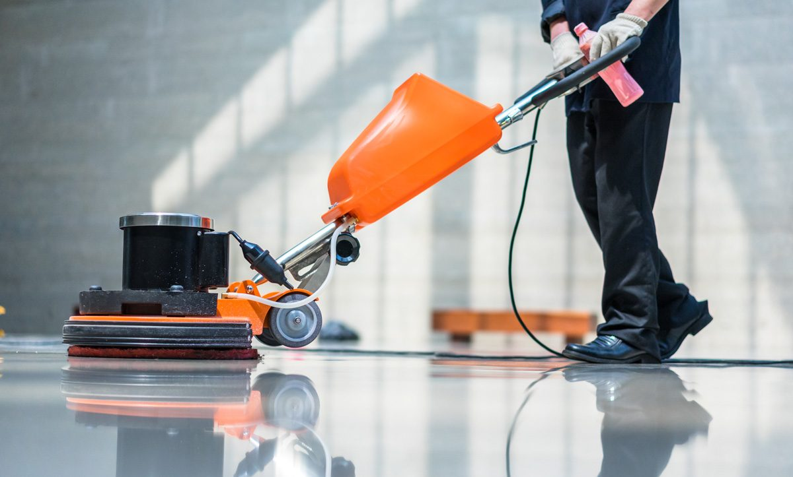

A clean office makes an impression on everyone who walks into the building. But, who has the time to make sure everything is tidy every week? Our professional office cleaning services will give you all the benefits of a spotless office without the extra work.
When cleaning we both traditional office cleaning tools and top-of-the-line equipment, such as Hepa vacuums with filtration technology, carpet extractors and auto scrubbers
When you employ our services for a regular cleaning we will sweep and mop the floors, if you office has crapet we vacuum it, wipe down all the surfaces including desks with your permission. We will clean your kitchen, all the restrooms, and empty out all the trash cans.
When you employ our service for a through services we will strip and wax floors, clean windows (for more information check out our window cleaning page), clean light bulbs, do upholstery cleaning,clean vents, carpet cleaning (check out our crapet cleaning web page for more information), high dusting, and clean blinds.
Need a reliable and trustworthy cleaning service to maintain your home's cleanliness on a regular basis? Our long-term house cleaning services provide peace of mind and a comfortable living space.
Phone: (234)-746-6789
Email: tiddyTouch@gmail.com


Experience the convenience of a clean living space every single day! Our cleaning services are tailored to meet your specific needs and ensure that your home is always spotless. Say goodbye to clutter and hello to relaxation as our team of experts keeps your living environment well-maintained on a daily basis. No more worries about taking care of household chores yourself, we're here to handle it all for you! Choose us for a hassle-free, everyday cleaning experience.